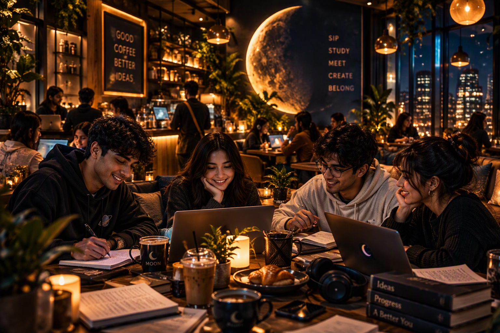

YOUTH-FOCUSED COFFEE SHOP
MOON CAFÉ
SEGMENTATION • TARGETING • POSITIONING
Who comes to MOON?

College Students
Four ways we see the market.
DEMOGRAPHICWho they are
TARGET LOCKED
02 / PRIMARY TARGETCOLLEGE
STUDENTS
Age 18–24 • Urban • Social • Value-conscious
Young Employees remain an important segment, but not the primary target.
Why college students?
Build the position.
TARGET Urban college students aged 18–24
FRAME Youth-focused neighbourhood coffee shop
BENEFIT Affordable coffee + space to meet, study and relax
REASON TO BELIEVE Student combos, Wi-Fi, charging, seating and modern atmosphere
For urban college students aged 18–24, our brand MOON is a youth-focused neighbourhood coffee shop that provides affordable coffee and a comfortable place to meet, study and relax because it offers student-friendly combos, Wi-Fi, charging, comfortable seating and a modern atmosphere.